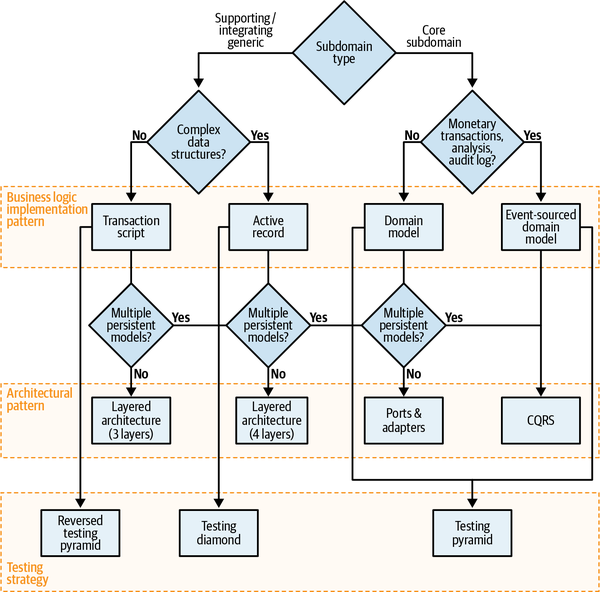

To complete our exploration of domain-driven design I want to get back to the quote we started with:
There is no sense in talking about the solution before we agree on the problem, and no sense talking about the implementation steps before we agree on the solution.
Efrat Goldratt-Ashlag
This quote neatly summarizes our DDD journey.
To provide a software solution, we first have to understand the problem: what is the business domain that we are working in, what are the business goals, and what is the strategy for achieving them.
We used the ubiquitous language to gain a deep understanding of the business domain and its logic that we have to implement in software.
You learned to manage the complexity of the business problem by breaking it apart into bounded contexts. Each bounded context implements a single model of the business domain, aimed at solving a specific problem.
We discussed how to identify and categorize the building blocks of business domains: core, supporting, and generic subdomains. Table E-1 compares these three types of subdomains.
| Subdomain type | Competitive advantage | Complexity | Volatility | Implementation | Problem |
| Core | Yes | High | High | In-house | Interesting |
| Generic | No | High | Low | Buy/adopt | Solved |
| Supporting | No | Low | Low | In-house/outsource | Obvious |
You learned to leverage this knowledge to design solutions optimized for each type of subdomain. We discussed four business logic implementation patterns—transaction script, active record, domain model, and event sourced domain model—and the scenarios in which each pattern shines. You also saw three architectural patterns that provide the required scaffolding for the implementation of business logic: layered architecture, ports & adapters, and CQRS. Figure E-1 summarizes the heuristics for tactical decision-making using these patterns.

In Part III, we discussed how to turn theory into practice. You learned how to effectively build a ubiquitous language by facilitating an EventStorming session, how to keep the design in shape as the business domain evolves, and how to introduce and start using domain-driven design in brownfield projects.
In Part IV, we discussed the interplay between domain-driven design and other methodologies and patterns: microservices, event-driven architecture, and data mesh. We saw that not only can DDD be used in tandem with these techniques, but they in fact complement each other.
I hope this book got you interested in domain-driven design. If you want to keep learning, here are some books that I wholeheartedly recommend.
Evans, E. (2003). Domain-Driven Design: Tackling Complexity in the Heart of Software. Boston: Addison-Wesley.
Eric Evans’s original book that introduced the domain-driven design methodology. Although it doesn’t reflect newer aspects of DDD such as domain events and event sourcing, it’s still essential reading for becoming a DDD black belt.
Martraire, C. (2019). Living Documentation: Continuous Knowledge Sharing by Design. Boston: Addison-Wesley.
In this book, Cyrille Martraire proposes a domain-driven design–based approach to knowledge sharing, documentation, and testing.
Vernon, V. (2013). Implementing Domain-Driven Design. Boston: Addison-Wesley.
Another timeless DDD classic. Vaughn Vernon provides in-depth discussion and detailed examples of domain-driven design thinking and the use of its strategic and tactical toolset. As a learning foundation, Vaughn uses a real-world example of failing initiatives with DDD and the teams’ rejuvenated journey afforded by applying essential course corrections.
Young, G. (2017). Versioning in an Event Sourced System. Leanpub.
In Chapter 7, we discussed that it can be challenging to evolve an event-sourced system. This book is dedicated to this topic.
Dehghani, Z. (Expected to be published in 2022). Data Mesh: Delivering Data-Driven Value at Scale. Boston: O’Reilly.
Zhamak Dehghani is the author of the data mesh pattern that we discussed in Chapter 16. In this book, Dehghani explains the principles behind the data management architecture, as well as how to implement the data mesh architecture in practice.
Fowler, M. (2002). Patterns of Enterprise Application Architecture. Boston: Addison-Wesley.
The classic application architecture patterns book that I quoted multiple times in Chapter 5 and Chapter 6. This is the book in which the transaction script, active record, and domain model patterns were originally defined.
Hohpe, G., & Woolf, B. (2003). Enterprise Integration Patterns: Designing, Building, and Deploying Messaging Solutions. Boston: Addison-Wesley.
Many of the patterns discussed in Chapter 9 were originally introduced in this book. Read this book for more component integration patterns.
Richardson, C. (2019). Microservice Patterns: With Examples in Java. New York: Manning Publications.
In this book, Chris Richardson provides many detailed examples of patterns often used when architecting microservices-based solutions. Among the discussed patterns are saga, process manager, and outbox, which we discussed in Chapter 9.
Kaiser, S. (Expected to be published in 2022). Adaptive Systems with Domain-Driven Design, Wardley Mapping, and Team Topologies. Boston: Addison-Wesley.
Susanne Kaiser shares her experience of modernizing legacy systems by leveraging domain-driven design, Wardley mapping, and team topologies.
Tune, N. (Expected to be published in 2022). Architecture Modernization: Product, Domain, & Team Oriented. Leanpub.
In this book, Nick Tune discusses in depth how to leverage domain-driven design and other techniques to modernize brownfield projects’ architecture.
Vernon, V., & Jaskula, T. (2021). Implementing Strategic Monoliths and Microservices. Boston: Addison-Wesley.
A hands-on book in which the authors demonstrate ageless software engineering tools, including rapid discovery and learning, domain-driven approaches, and handling the intricacies of properly implementing monolith- and microservices-based solutions, all while focusing on the most important aspect: delivering innovative business strategy.
Vernon, V., & Jaskula, T. (2021). Strategic Monoliths and Microservices. Boston: Addison-Wesley.
In this book Vaughn and Tomasz promote software strategic thinking by exploring how to achieve all-important innovations using discovery-based learning along with a domain-driven approach, and how to select the most purposeful architecture and tools for the job: microservices, monoliths, or a blend, and how to make them work together.
Brandolini, A. (Not yet published). Introducing EventStorming. Leanpub.
Alberto Brandolini is the creator of the EventStorming workshop, and in this book, he explains in detail the process and rationale behind EventStorming.
Rayner, P. (Not yet published). The EventStorming Handbook. Leanpub.
Paul Rayner explains how he uses EventStorming in practice, including numerous tips and tricks for facilitating a successful session.
That’s it! Thank you so much for reading this book. I hope you enjoyed it and that you will use what you’ve learned from it.
What I hope you take away from this book are the logic and the principles behind domain-driven design tools. Don’t follow domain-driven design blindly as a dogma, but rather understand the reasoning it is based on. This understanding will significantly increase your opportunities to apply DDD and gain value from it. Understanding the philosophy of domain-driven design is also the key to leveraging value by incorporating the methodology’s concepts individually, especially in brownfield projects.
Finally, always watch your ubiquitous language, and when in doubt, do EventStorming. Good luck!